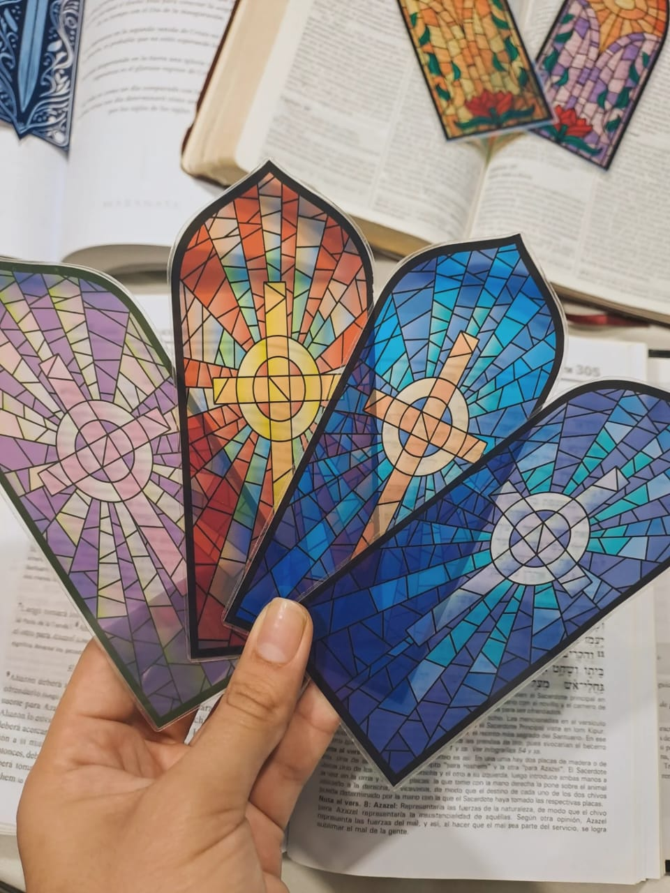
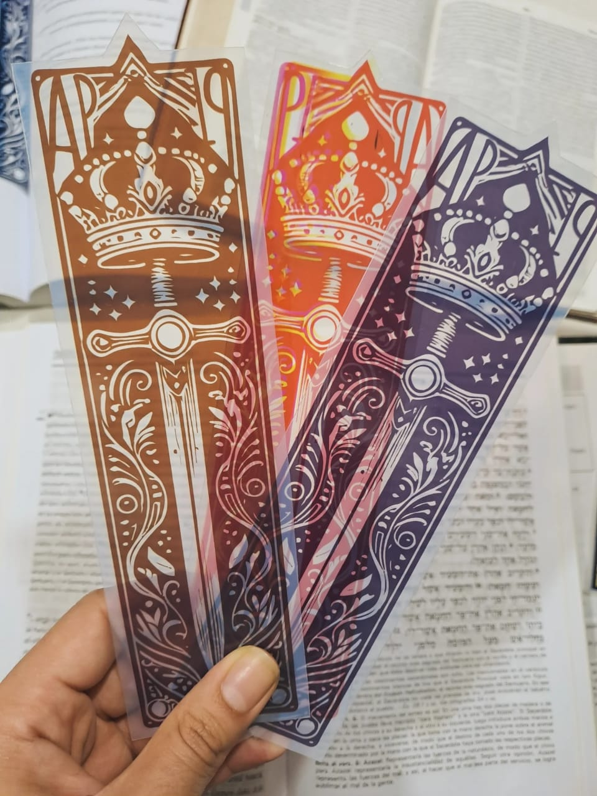

Señalador Cruz
$900 c/u • Promo: 2 x $1.500 (Cruces y Rosas combinables)
Señaladores transparentes diseñados para acompañar tus momentos de lectura, estudio y devocional 🤍
Ver detalles
Señalador Rosa
$900 c/u • Promo: 2 x $1.500 (Cruces y Rosas combinables)
Cada pieza combina un diseño delicado y significativo con un acabado translúcido que deja ver el texto sin perder claridad.
Ver detalles
Espada Apocalipsis 19
$1.000 c/u • Promo: 2 x $1.800
Son livianos, resistentes y plastificados, ideales para el uso diario sin que se doblen ni se deterioren fácilmente.
Ver detalles